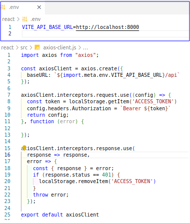

El ejercicio es hacer un catálogo de libros con una autenticación simple basada en token, ver codigo en laravelReact_bookAuth, se usa para el desarrollo:
El esquema de libros en la base de datos es el siguiente:
Por supuesto primero creamos el proyecto y configuramos en el archivo .env nuestra base de datos
composer create-project laravel/laravel laravelReact_bookAuth
Bendito sea Laravel, incluye lo necesario para construir el esquema de la base de datos para el modelo App\Models\User. Así pues, a generar la migración con:
php artisan migrate
En la autenticación para APIs Laravel usa Sanctum, así que se usará la autenticación basada en token, lo básico. Comenzamos con la creación de las rutas para ver el formulario de registro y login, esto en el archivo routes/api.php
Ya están incluidas en las rutas el controlador books que se generará/usará más adelante. Para crear las funciones signup, login y logout generamos el controlador de Auth, en app/Http/Controllers/Api/AuthController.php
php artisan make:controller Api/AuthController
Creamos las clases de petición de formulario
php artisan make:request SignupRequest
php artisan make:request LoginRequest
up
Bien, en esta parte, se crea el formulario para acceder al catálogo. Para esto se instala React, usaremos vite, eligiendo en las opciones de instalación el framework de React con variante JavaScript
npm create vite
cd react
npm install
npm run dev
Yo uso el puerto 3000, asi en package.json lo ajustamos a ese puerto vite --port=3000, lo corremos para ver si todo normal y seguimos. Se usan las siguientes librerías y la documentación respectiva está en: axios-http.com -- reactrouter.com -- react-bootstrap.netlify.app así pues a instalar lo siguiente:
// para las peticiones
npm install axios
// para multiples paginas
npm install react-router-dom
// y para la vista
npm install react-bootstrap bootstrap
Se genera un archivo .env, en la carpeta react por supuesto, para inyectar variables de entorno, en este caso sólo tenemos una que es VITE_API_BASE_URL, y es la ruta a nuestro servidor de prueba. Y en axios-client.jsx generamos el cliente con interceptores.
touch .env

Se creó un ContextProvider src/contexts/ContexProvider.jsx para manejar el token del usuario y las rutas en src/router.jsx el código se puede ver en el directorio react/src ,
upRegresamos al backend, se generan 5 modelos para la migración y para Book, Genre y Author también el factory para luego sembrar datos en la base de datos
php artisan make:model Book -mf
php artisan make:model Genre -mf
php artisan make:model Author -mf
php artisan make:model AuthorBook -m
php artisan make:model BookGenre -m
Antes de generar la migración, verificar el nombre de las tablas: author_books queda como author_book y book_genres queda como book_genres para que no tengamos conflicto después con las búsquedas con Eloquent. La definición de las tablas está aquí en database/migrations"
Se configuran los modelos con sus relaciones respectivas:
sin olvidar las relacionales
La clase factory que creamos para Book, Author y Genres está aquí en database/factories y el seeder queda así:
php artisan make:seeder BookSeeder
Y ya podemos migrar y sembrar, claro, con esto borramos también nuestro usuario, con el que hicimos pruebas en el formulario de acceso.
php artisan migrate:fresh --seed
php artisan db:seed --class=BookSeeder
Si se requiere cambiar un campo, borrar una tabla o renombrarla, se genera otra migración, ej.:
php artisan make:migration 2023_11_12_213950_create_books_table
se cambia lo que se tenga que cambiar y migrar de nuevo
php artisan migrate
up
Generarmos los controladores y recursos para las tablas implicadas
php artisan make:controller Api/BookController --model=Book --resource --requests --api
php artisan make:resource BookResource
php artisan make:controller Api/GenreController --model=Genre --resource --requests --api
php artisan make:resource GenreResource
php artisan make:controller Api/AuthorController --model=Author --resource --requests --api
php artisan make:resource AuthorResource
En la clase del recurso BookResource añadimos además de los campos de Book, 'genres' y 'authors' para incluirlos en el resultado de la búsqueda para el listadode libros
Aquí se ve como 'genres' y 'authors' son aplicados en la busqueda Eloquent para listar todos libros (index) con los autores/genres con los que tienen relación así como en (show) para poder crear los select con la lista de todos los autores/generos al editar o añadir un libro
Como se usan imágenes, se crea una liga simbólica en config/filesystems.php
php artisan storage:link
up
Para este formulario añadimos las siguientes librerías
// notificaciones monas
npm i react-hot-toast
// para el select del formulario de libros
npm i --save react-select
Aquí las páginas relacionadas al crud de libros, son dos, Book.jsx donde se listan todos los libros, y BookForm.jsx para editar un libro ó añadir uno nuevo.
Como vamos a subir y guardar imágenes se usa el objeto FormData para mandar los datos al backend. Aquí muestro las reglas para el request y la parte del codigo de envío de los datos al editar un libro.
Me encontré con que al enviar los datos con el objeto FormData los datos no llegaban ¿?, como sea, se solucionó de la siguiente manera, no estoy segura si es un bug, o si estoy olvidando algo:
Bien, al final los directorios en react quedaron así: